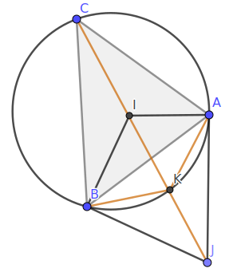
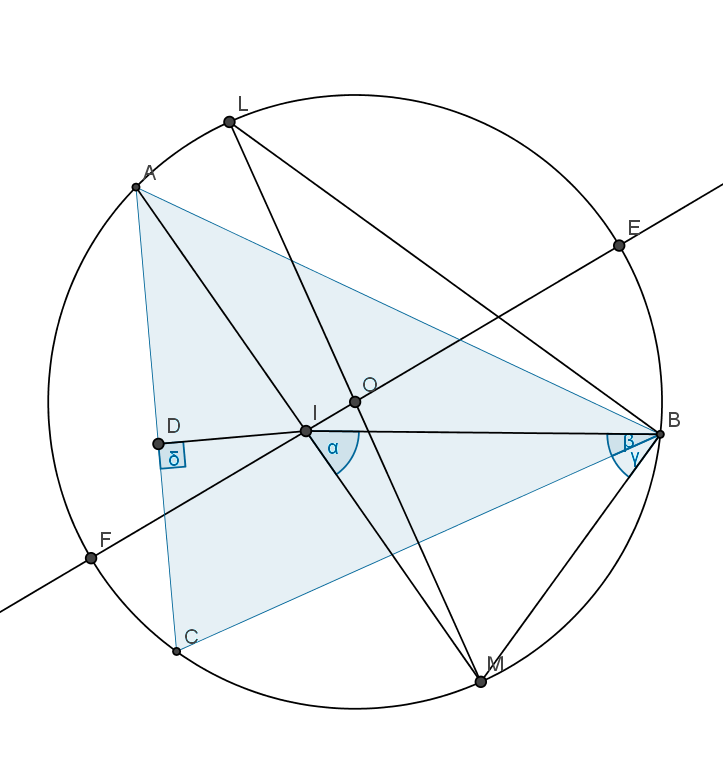
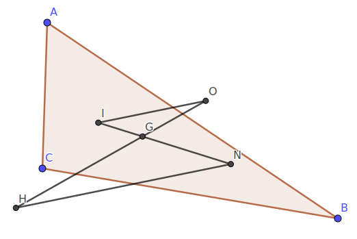

勾股定理
直角三角形的两直角边长为 `a, b`, 则斜边 `c` 满足
`c^2 = a^2 + b^2` (勾股定理).
斜边上的高 `h` 满足
`1/h^2 = 1/a^2 + 1/b^2` (倒数勾股定理).
应用面积法知道 `c h = a b`, 于是
`1/h^2 = (c/(a b))^2 = (a^2 + b^2)/(a^2 b^2) = 1/a^2 + 1/b^2`.
正弦/余弦定理
正弦定理
由面积关系
`2S = b c sin A = a c sin B`, 得到:
`(sin A)/a = (sin B)/b`.
此外有圆周角和其所对弦长的关系 `a = 2 R sin A`.
三角形的面积
Heron 公式
设三角形的三边长分别为 `a, b, c`, 其周长的一半为 `p = (a+b+c)//2`,
则三角形的面积为
`S = sqrt(p(p-a)(p-b)(p-c))`.
记边 `a, b` 的夹角为 `C`, 利用余弦定理
`cos C = (a^2+b^2-c^2)/(2a b)`,
有
`16S^2 = 16 (1/2 a b sin C)^2`
`= (2a b)^2 (1-cos^2 C)`
`= (2a b)^2 (1+(a^2+b^2-c^2)/(2a b)) (1-(a^2+b^2-c^2)/(2a b))`
`= [(a+b)^2-c^2][c^2-(a-b)^2]`
`= (a+b+c)(a+b-c)(c+a-b)(c-a+b)`,
结论得证.
三维欧氏空间中,
`cos AOC = alpha`, `cos BOC = beta`, `cos AOB = gamma`.
求 `OC` 与平面 `AOB` 的夹角余弦值 `rho`.
不妨设 `OC = 1`, 作 `CH` 垂直平面 `AOB` 于 `H`, 则 `OH = rho`,
`cos AOH = alpha//rho`, `cos BOH = beta//rho`,
于是
`gamma = cos AOB`
`= cos(AOH +- BOH)`
`= (alpha beta -+ sqrt((rho^2-alpha^2)(rho^2-beta^2)))/rho^2`.
`OC` 不垂直于平面 `AOB` 时, 解得
`rho^2 = (alpha^2 + beta^2 - 2alpha beta gamma)/(1-gamma^2)`.
显然上式也适用于 `OC` 垂直于平面 `AOB` 的情形.
Euler 四面体问题
已知四面体六棱长, 求体积.
记这个四面体为 `OABC`, 其中 `OA = a`, `OB = b`, `OC = c`,
`AB = p`, `AC = q`, `BC = r`.
利用余弦定理,
`gamma := cos AOB = (a^2+b^2-p^2)/(2a b)`,
`alpha := cos AOC = (a^2+c^2-q^2)/(2a c)`,
`beta := cos BOC = (b^2+c^2-r^2)/(2b c)`.
利用引理有
`V^2 = (1/3 S_(AOB) h)^2`
`= (1/6 a b sin AOB h)^2`
`= (1/6 a b c)^2 (1-gamma^2) (1-alpha^2-beta^2-gamma^2 + 2alpha
beta gamma)/(1-gamma^2)`.
即
`((6V)/(a b c))^2 = 1-alpha^2-beta^2-gamma^2 + 2alpha beta gamma`.
记号同前一种解法. 又记 `vec(OA) := bm a = (a_1, a_2, a_3)`, `vec(OB)
:= bm b = (b_1, b_2, b_3)`, `vec(OC) := bm c = (c_1, c_2, c_3)`, 则
`36 V^2 =
|a_1, a_2, a_3; b_1, b_2, b_3; c_1, c_2, c_3|
|a_1, b_1, c_1; a_2, b_2, c_2; a_3, b_3, c_3|`
`= |
bm a * bm a, bm a * bm b, bm a * bm c;
bm b * bm a, bm b * bm b, bm b * bm c;
bm c * bm a, bm c * bm b, bm c * bm c
|`
`= |
a^2, gamma a b, alpha a c;
gamma a b, b^2, beta b c;
alpha a c, beta b c, c^2
|`
`= (a b c)^2 | 1, gamma, alpha; gamma, 1, beta; alpha, beta, 1 |`
`= (a b c)^2 (1-alpha^2-beta^2-gamma^2 + 2 alpha beta gamma)`.
结果与前相同.
设有矩形 `ABCD`, `E, F` 分别在边 `BC, CD` 上,
`S_(ABE) = x`, `S_(ADF) = y`, `S_(CEF) = z`. 求 `S_(AEF)`.
设 `AB = a`, `AD = b`, 则 `BE = (2x)/a`, `DF = (2y)/b`.
利用 `S_(CEF)` 列出方程:
`(b-(2x)/a)(a-(2y)/b) = 2 z`,
即
`(a b-2x)(a b-2y) = 2 a b z`.
上式视为 `a b` 的方程, 解得
`a b = x+y+z +- sqrt((x+y+z)^2-4x y)`.
显然 `a b gt x + y + z`, 上式应取正号, 所以
`S_(AEF) = sqrt((x+y+z)^2-4x y)`.
定比分点, 齐次坐标与三角形的心
定比分点
设 `AB` 是线段, `lambda, mu, k` 为实数,
若点 `P` 满足
`vec(AP) = k lambda vec(AB)`,
`quad vec(PB) = k mu vec(AB)`.
则称 `P` 把 `AB` 分成了 `lambda//mu`.
特别当 `P` 在线段 `AB` 上时, 称 `P` 是 `AB` 的内分点.
定比分点公式
设 `O` 是平面上任一点, `AB` 是一线段.
则平面上一点 `P` 把 `AB` 分成 `lambda//mu`, `lambda+mu=1` 当且仅当
`vec(OP) = mu vec(OA) + lambda vec(OB)`.
特别 `lambda = mu = 1/2` 刻画了 `P` 是 `AB` 中点的情形:
`vec(OP) = 1/2 (vec(OA) + vec(OB))`.
在 `triangle ABC` 中, 分别用 `a, b, c` 记三个角 `A, B, C` 的对边,
点 `P` 满足 `vec(AP) = lambda vec(PB)`. 则
- `P` 是 `AB` 中点时, `lambda = 1`;
- (角平分线定理) `CP` 是 `/_ACB` 的平分线时,
`lambda = S_(ACP)/S_(BCP) = b/a = (sin B)/(sin A)`;
- `CP` 是 `AB` 边上的高时,
`lambda = (b cos A)/(a cos B) = (sin B cos A)/(sin A cos B)`
`= (tan B)/(tan A)`.
Stewart 定理
设有 `triangle ABC`, 内分点 `P` 将 `AB` 分成了 `lambda//mu`,
`lambda+mu=1`.
分别用 `a, b, c` 记 `triangle ABC` 中 `A, B, C` 的对边, 则
`|CP|^2 = lambda a^2 + mu b^2 - lambda mu c^2`.
由定比分点公式
`vec(CP) = mu vec(CA) + lambda vec(CB)`,
由余弦定理
`cos /_ACB = (a^2+b^2-c^2)/(2a b)`.
于是
`|vec(CP)|^2`
`= mu^2 |vec(CA)|^2 + lambda^2 |vec(CB)|^2 + 2 lambda mu vec(CA)
* vec(CB)`
`= lambda^2 a^2 + mu^2 b^2 + 2lambda mu a b cos/_ACB`
`= lambda^2 a^2 + mu^2 b^2 + lambda mu (a^2+b^2-c^2)`
`= lambda a^2 + mu b^2 - lambda mu c^2`.
中线长与角平分线长
设 `triangle ABC` 中, `a, b, c` 分别是 `A, B, C` 的对边, `p
= (a+b+c)//2`, 边 `c` 上的中线长与角平分线长分别记为 `m_c`, `t_c`.
由 Stewart 定理和得到
- `4 m_c^2 = 2(a^2+b^2)-c^2`;
- `t_c^2 = ((2a b)/(a+b)cos{:C/2:})^2`
`= (2/(a+b))^2 a b p(p-c)`
`= a b - (a c)/(a+b) (b c)/(a+b)`.
设角平分线与 `AB` 交于 `P`, 最后一个公式即为
`|CP|^2 = |CA| |CB| - |AP| |PB|`.
- `4(m_c^2-t_c^2)`
`= (2(a^2+b^2) - 4a b) + ((4a b c^2)/(a+b)^2 - c^2)`
`= 2(a-b)^2 - c^2/(a+b)^2 (a-b)^2`
`= ((a-b)/(a+b))^2 [2(a+b)^2-c^2]`.
可见中线总是长于或等于角平分线. 二者相等当且仅当 `a = b`.
齐次坐标
设平面上有一点 `X` 和 `triangle ABC`, 如果存在实数 `x_A, x_B, x_C`
满足 `x_A + x_B + x_C = 1`, 且
`x_A vec(AX) + x_B vec(BX) + x_C vec(CX) = bb 0`.
则称 `(x_A, x_B, x_C)` 为 `X` 关于 `triangle ABC` 的齐次坐标.
`X` 关于 `triangle ABC` 的齐次坐标存在唯一.
存在性: 平面上三个向量必线性相关, 故存在不全为零的实数
`k_1, k_2, k_3` (不妨设 `k_3 != 0`) 使得
`k_1 vec(AX) + k_2 vec(BX) + k_3 vec(CX) = bb 0`.
假设 `k_1 + k_2 + k_3 = 0`, 则在等式
`k_1 vec(AX) + k_2 vec(BX) = -k_3 vec(CX)`
两边同除以 `-k_3` 得
`k_1/(k_1+k_2) vec(AX) + k_2/(k_1+k_2) vec(BX) = vec(CX)`.
由定比分点公式知 `A, B, C` 共线, 这与 `A, B, C`
三点构成一个三角形矛盾, 所以 `k_1 + k_2 + k_3 != 0`.
记 `x_i = k_i//(k_1+k_2+k_3)`, `i = 1, 2, 3`,
则 `(x_1, x_2, x_3)` 就是 `X` 关于 `triangle ABC` 的齐次坐标.
唯一性: 设 `(x_1, x_2, x_3)` 和 `(y_1, y_2, y_3)` 都是 `X` 关于
`triangle ABC` 的齐次坐标, 我们有
`x_1 vec(AX) + x_2 vec(BX) + x_3 vec(CX) = bb 0`,
`y_1 vec(AX) + y_2 vec(BX) + y_3 vec(CX) = bb 0`.
相减得
`(x_1-y_1)vec(AX) + (x_2-y_2)vec(BX) + (x_3-y_3)vec(CX) = bb 0`.
假设 `(x_1, x_2, x_3) != (y_1, y_2, y_3)`, 则 `x_1-y_1, x_2-y_2,
x_3-y_3` 不全为零. 由存在性部分的证明知, 此时
`(x_1-y_1) + (x_2-y_2) + (x_3-y_3) != 0`.
与 `x_1+x_2+x_3 = y_1+y_2+y_3 = 1` 矛盾.
故 `(x_1, x_2, x_3) = (y_1, y_2, y_3)`.
`(x_A, x_B, x_C)` 是 `X` 关于 `triangle ABC` 的齐次坐标,
当且仅当对平面上的任意一点 `O` 有
`vec(OX) = x_A vec(OA) + x_B vec(OB) + x_C vec(OC)`.
这一结论帮助我们将齐次坐标化为普通坐标.
充分性: 将点 `A, B, C` 分别代入 有
`vec(AX) = x_B vec(AB) + x_C vec(AC)`,
`vec(BX) = x_A vec(BA) + x_C vec(BC)`,
`vec(CX) = x_A vec(CA) + x_B vec(CB)`.
所以 成立.
必要性: 易知 `x_A, x_B, x_C` 不全为零, 不妨设 `x_A != 0`, 有
`{:
vec(OX) ,= vec(OA) + vec(AX);
,= vec(OA) - 1/x_A (x_B vec(BX) + x_C vec(CX));
,= vec(OA) - 1/x_A [x_B (vec(OX)-vec(OB)) + x_C(vec(OX)-vec(OC))];
,= vec(OA) + x_B/x_A vec(OB) + x_C/x_A vec(OC) - (x_B+x_C)/x_A vec(OX).
:}`
利用 `x_A + x_B + x_C = 1`,
整理即得式 .
下面推导齐次坐标的计算公式, 为此先引入三角形的有向面积的概念:
- 三角形的有向面积的绝对值等于三角形的面积;
- 当三个顶点的书写次序为逆时针时, 三角形的有向面积的符号为正, 否则为负.
设平面上有一点 `X` 和 `triangle ABC`,
三角形 `ABC, BCX, CAX, ABX` 的有向面积分别记为 `S, S_A, S_B, S_C`.
则点 `X` 关于 `triangle ABC` 的齐次坐标是 `1/S(S_A, S_B, S_C)`.
(更具一般性的证明? 交点 `P` 的存在性?)
任取平面上一点 `O`.
设直线 `CX` 交 `AB` 于 `P`, 注意到 `AP//BP = S_B//S_A`, 有
`vec(OP) = 1/(S_A + S_B) (S_A vec(OA) + S_B vec(OB))`.
另外, 容易得到 `S_(APM) = S_C S_B/(S_A + S_B)`, 故知
`(CM)/(MP) = S_B/S_(APM) = (S_A + S_B)/S_C`. 从而
`vec(OM) = 1/(S_A+S_B+S_C)[(S_A+S_B) vec(OP) + S_C vec(OC)]`
`= 1/S (S_A vec(OA) + S_B vec(OB) + S_C vec(OC))`.
Menelaus 定理与 Ceva 定理
设有 `triangle ABC`, `P, Q, R` 分别在直线 `AB, BC, CA` 上,
满足 `vec(AP) = lambda vec(PB)`, `vec(BQ) = mu vec(QC)`, `vec(CR) = nu
vec(RA)`, 则
- Menelaus 定理
`P, Q, R` 共线当且仅当 `lambda mu nu = -1`;
- Ceva 定理
若 `P, Q, R` 都是内分点, 则
`AQ, BR, CP` 共点当且仅当 `lambda mu nu = 1`.
- 容易写出
`vec(A P) = lambda/(1+lambda) vec(A B)`,
`quad vec(A Q) = 1/(1+mu) vec(A B) + mu/(1+mu) vec(A C)`,
`quad vec(A R) = 1/(1+nu) vec(A C)`.
三点 `P, Q, R` 共线当且仅当它们围成的三角形面积为零, 即
`0 = |
lambda/(1+lambda), 0, 1;
1/(1+mu), mu/(1+mu), 1;
0, 1/(1+nu), 1;
|`
`iff`
`0 = |
lambda,0,1+lambda;
1,mu,1+mu;
0,1,1+nu;
|`
`= |
lambda,0,1;
1,mu,0;
0,1,nu;
|`
`= lambda mu nu + 1`.
- 设三线交于点 `M`, 利用等式
` lambda mu nu
= (AP * BQ * CR)/(BP * CQ * AR)
= (S_(AMC) * S_(BMA) * S_(CMB))
/ (S_(BMC) * S_(CMA) * S_(AMB))
= 1`
立即得到必要性. 为证充分性, 设 `AQ`, `BR` 交于 `M`,
容易看出, 上式成立当且仅当 `M` 在 `CP` 上, 即三线共点.
角元 Ceva 定理
设 `P, Q, R` 分别是 `triangle ABC` 三边 `AB, BC, CA` 的内分点,
六个角 `/_ ACP`, `/_ PCB`, `/_ BAQ`, `/_ QAC`, `/_ CBR`, `/_ RBA`
依次记为 `/_ 1` 到 `/_ 6`, 则 `AQ, BR, CP` 共点当且仅当
`sin /_1 sin /_3 sin /_5 = sin /_2 sin /_4 sin /_6`.
必要性: 设三线共点于 `M`. 由正弦定理
`(sin /_1)/(AM) = (sin /_4)/(CM)`,
`quad (sin /_5)/(CM) = (sin /_2)/(BM)`,
`quad (sin /_3)/(BM) = (sin /_6)/(AM)`.
三式相乘即得结论.
充分性的证明与 Ceva 定理类似.
设圆周上顺次有 `A, B, C, D, E, F` 六点, 则
`AD, BE, CF` 共点当且仅当
`AB * CD * EF = BC * DE * FA`.
在 `triangle ACE` 中应用角元 Ceva 定理,
注意到圆周角所对的弦长正比于该圆周角的正弦值
(事实上有 `a = 2 R sin theta`, `a` 为弦长, `R` 为半径, `theta`
为圆周角), 即得结论.
角格点问题 三角形 `ABC` 内有一点 `O`, 若已知六个角 `OAB`,
`OAC`, `OBA`, `OBC`, `OCA`, `OCB` 中的四个, 则可以用角元 Ceva
公式求出另外两个. 特别当六个角的度数都是有理数时, 称 `O`
为三角形的角格点. 如
`sin 10^@ * sin 20^@ * sin 70^@ = sin 10^@ * sin 30^@ * sin 40^@`.
上式简记为 1 2 7 1 3 4. 用程序穷举所有 10 度的倍数的角格点如下:
三角形的心
假设如 Ceva 定理.
设 `AQ, BR, CP` 相交于点 `X`, 则 `X` 关于 `triangle ABC` 的齐次坐标是
`(1/(1+lambda+lambda mu),
1/(1+mu+mu nu),
1/(1+nu+nu lambda))`.
`S_A, S_B, S_C` 的定义见. 将
`S_B//S_A = lambda`, `quad S_C//S_B = mu`, `quad S_A//S_C = nu`
代入
`S_A + S_B + S_C = S`
得到
`S_A(1 + lambda + lambda mu) = S`,
`S_B(1 + mu + mu nu) = S`,
`S_C(1 + nu + nu lambda) = S`.
再由即得结论.
三角形的五心 三角形的
- 三条中线交于一点, 称为重心;
- 三条角平分线交于一点, 称为内心;
内心是三角形内切圆的心;
- 三条高所在的直线交于一点, 称为垂心;
- 三边的中垂线交于一点, 称为外心;
外心是三角形外接圆的心;
- 任一内角平分线与另外两个外角平分线交于一点,
称为旁心;
旁心共有三个，分别是三角形三个外切圆的心;
- 三个顶点到对边上旁切圆切点的连线交于一点, 称为界心.
- 由 Ceva 定理和 立即得到重心, 内心和垂心的存在性.
-
证明旁心存在性, 利用如下命题:
设 `l` 是过角的顶点的直线, 则以下三款等价:
- `l` 平分角;
- `l` 上任意一点到角两边的距离相等;
- `l` 上存在一点到角两边的距离相等.
容易证明, 若三角形的两条角平分线交于一点,
则这点与第三点的连线是第三条角平分线.
这一命题也可用于证明内心的存在性.
-
证明外心存在性, 可利用如下命题: 设 `l` 是过线段中点的直线,
则以下三款等价:
- `l` 垂直于线段;
- `l` 上任意一点到线段两端的距离相等;
- `l` 上存在一点到线段两端的距离相等.
容易证明, 若三角形两边的中垂线交于一点,
则这点与第三边中点的连线是第三条中垂线.
- 垂心存在性的又一证明:
设 `triangle ABC` 的两条高线 `AQ, BR` 交于点 `H`,
下证 `HC _|_ AB`.
事实上,
`HC _|_ AB` `iff vec(HC) * vec(AB) = 0`
`iff vec(HC) * (vec(HB) - vec(HA)) = 0`
`iff vec(HC) * vec(HA) = vec(HC) * vec(HB)`,
同理, `HA _|_ BC`, `HB _|_ CA` 等价于
`vec(HA)*vec(HB) = vec(HA)*vec(HC)`,
`vec(HB)*vec(HC) = vec(HB)*vec(HA)`.
于是 `vec(HC) * vec(HA) = vec(HC) * vec(HB)`, 即 `HC _|_ AB`.
由以上证明知, 垂心 `H` 满足等式
`vec(HA) * vec(HB) = vec(HB) * vec(HC) = vec(HC) * vec(HA)`.
利用和 容易算出 `triangle ABC` 各心的齐次坐标:
- 重心 `G`: `(1, 1, 1)`;
- 内心 `I`: `(a, b, c) = (sin A, sin B, sin C)`;
- 垂心 `H`: `(tan A, tan B, tan C)`,
如果 `A` 为直角, 此时 `tan A = oo`, 坐标视为 `(1, 0, 0)`;
- 外心 `O`: `(sin 2A, sin 2B, sin 2C)`;
- 旁心 `J_A`: `(-a, b, c)`. 其中 `J_A` 与 `A` 在直线 `BC` 异侧;
`J_B`, `J_C` 的坐标可以轮换得到.
- 界心 `N`: `(p-a, p-b, p-c)` `= (cot{:A/2:}, cot{:B/2:}, cot{:C/2:})`, 其中 `p = (a+b+c)//2`.
- 外心的 `lambda` 值的计算思路是:
`lambda = S_(AOC)/S_(COB) = (sin /_AOC)/(sin /_COB)`
`= (sin 2B)/(sin 2A)`.
- 旁心的 `lambda` 值的计算思路是 (用 `sigma` 表示有向面积):
`lambda = sigma_(A J_A C)/sigma_(C J_A B)`
`= - (b sin{:(pi-C)/2:})/(a sin{:(pi-C)/2:})`
`= -b/a`,
以及 `mu = c//b`, `nu = -a//b`.
- 界心的 `lambda = (p-b)/(p-a)`.
设 `triangle ABC` 的面积为 `S`, `p = (a+b+c)//2`,
则内切圆 `I`, 旁切圆 `J_A, J_B, J_C` 的半径分别是
`r = S/p`,
`quad r_A = S/(p-a)`,
`quad r_B = S/(p-b)`,
`quad r_C = S/(p-c)`.
由三角形面积的 Heron 公式推知,
`S^2 = r r_A r_B r_C`.
注意到 `S` 是 `triangle BCI`, `triangle CAI`, `triangle ABI`
的面积之和:
`S = 1/2 a r + 1/2 b r + 1/2 c r`,
即得到 `r = S//p`.
再由 `S` 是 `triangle BCJ_A`, `triangle CAJ_A`, `triangle ABJ_A`
的有向面积之和:
`S = -1/2 a r_A + 1/2 b r_A + 1/2 c r_A`,
即得到 `r_A = S//(p-a)`
余切定理
`triangle ABC` 中, 记 `p = (a+b+c)//2`, `r` 为内切圆半径, 则
`cot{:A/2:} = (p-a)/r`,
`quad cot{:B/2:} = (p-b)/r`,
`quad cot{:C/2:} = (p-c)/r`.
结合内, 外切圆的半径长度, 有: 三角形每个外切圆到其对面顶点 (如,
圆 `J_A` 到点 `A`) 的切线长都等于 `p`.
设内切圆 `I` 在边 `AB, BC, CA` 上的切点分别为 `P, Q, R`. 设 `AP = AR
= x`, `BP = BQ = y`, `CQ = CR = z`, 于是
`y+z = a`, `quad z+x = b`, `quad x+y = c`.
解得 `x = p-a`, `y = p-b`, `z = p-c`.
在 `triangle API` 中可以验证 `cot{:A/2:}`. 其余类似.
三角形的三个旁心相连接形成的三角形称为它的旁心三角形.
三角形的三个垂足相连接形成的三角形称为它的垂足三角形.
如果 `ABC` 是 `DEF` 的旁心三角形, 则 `DEF` 是 `ABC` 的垂足三角形,
反之亦然. 垂足三角形是周长最小的内接三角形.
重心是平面上到三角形三个顶点距离平方和最小的点,
也是三角形内部到三边距离之积最大的点.
- 设三个顶点的坐标分别为 `(x_i, y_i)`, `i = 1,2,3`.
则点 `(x,y)` 到它们距离的平方和为
`f(x,y) = sum_(i=1)^3 ((x-x_i)^2+(y-y_i)^2)`.
求导有
`(del f)/(del x) = 2 sum_(i=1)^3 (x-x_i)`,
`quad (del f)/(del y) = 2 sum_(i=1)^3 (y-y_i)`,
Hessian 矩阵
`[(del^2 f)/(del x^2), (del^2 f)/(del x del y);
(del^2 f)/(del y del x), (del^2 f)/(del y^2)]`
`= 6 [1, 0; 0, 1]` 正定.
令 `(del f)/(del x) = (del f)/(del y) = 0` 求得极小值点
`(x,y) = 1/3(x_1+x_2+x_3,y_1+y_2+y_3)`.
这是三角形的重心.
- 设点 `X` 的齐次坐标是 `1/S(S_A, S_B, S_C)`,
则它到三边距离之积等于
`(2S_A)/a (2S_B)/b (2S_C)/c`
`le 8/(a b c) ((S_A + S_B + S_C)/3)^3`
`= 8/27 S^3/(a b c)`.
等号成立当且仅当 `S_A = S_B = S_C`, 即 `X` 是三角形的重心.
鸡爪定理 [来自 百度百科]
在 `triangle ABC` 中, `/_ C` 的平分线与外接圆交于 `K`, 设内心为 `I`,
`/_ C` 所对的旁心为 `J`, 则 `A, B, I, J` 四点共圆, 圆心为 `K`.
此时线段 `KA`, `KB`, `KI`, `KJ` 形似鸡爪, 故称为鸡爪定理.

- `KA = KB`: 相等圆周角所对的弦相等.
- `KA = KI`: 只需证 `/_ KAI = /_ KIA`, 即证
`/_ KAB + /_ BAI = /_ KCA + /_ IAC`.
上式成立, 这是因为
`/_ KAB = /_ KCB = /_ KCA`,
`quad /_ BAI = /_ IAC`.
- 由 1, 2 知道 `K` 是 `ABI` 的外心, 下证 `A, B, I, J` 四点共圆.
事实上由 `AI`, `AJ` 分别是三角形内角与外角的平分线知道, `/_ IAJ` 是直角.
同理 `/_ IBJ` 也是直角, 这就推出 `A, B, I, J` 四点共圆.
设 `A, B, C` 三点到原点 `O` 的距离分别为 `a, b, c`, 求三角形 `ABC`
面积的最大值.
首先说明, 只有 `O, A, B, C` 四点共面时, 三角形面积才能取得最大值.
若三角形面积最大时四点不共面, 可设 `O` 在平面 `ABC` 上的投影为 `O'`,
有 `O'A lt OA`, `O'B lt OB`, `O'C lt OC`. 但如果延长 `O'A`, `O'B`,
`O'C` 三条线段, 使它们分别等于 `OA`, `OB`, `OC`,
所得的三角形面积将更大, 矛盾.
下面假设四点共面.
记 `vec(OA) = bm a`, `vec(OB) = bm b`, `vec(OC) = bm c`,
`(:bm a, bm b:) = theta_1`, `(:bm b, bm c:) = theta_2`, `(:bm c, bm
a:) = theta_3`, 则三角形面积的两倍等于
`a b sin theta_1 + b c sin theta_2 + c a sin theta_3`.
设
`f = a b sin theta_1 + b c sin theta_2 + c a sin theta_3
- lambda(theta_1 + theta_2 + theta_3 - 2pi)`.
于是
`(del f)/(del theta_1) = a b cos theta_1 - lambda`,
`quad (del f)/(del theta_2) = b c cos theta_2 - lambda`,
`quad (del f)/(del theta_3) = c a cos theta_3 - lambda`.
令三个偏导数为零知, 当
`bm a * bm b = bm b * bm c = bm c * bm a = lambda`
时, 三角形面积最大 (此时原点是三角形的垂心). 将
`a b cos theta_1 = b c cos theta_2 = c a cos theta_3`
中的 `cos theta_2, cos theta_3` 用 `cos theta_1` 表示, 再代入
`cos theta_3 = cos(2pi-theta_1 - theta_2)`
`= cos(theta_1 + theta_2)`,
整理得到 `lambda` 满足下面的三次方程:
`lambda^2 (a^2 + b^2 + c^2) = a^2 b^2 c^2 + 2 lambda^3`.
解出 `lambda` 后, 再代入
`2 S = sqrt(a^2 b^2 - (bm a * bm b)^2) + sqrt(b^2 c^2 - (bm b * bm
c)^2) + sqrt(c^2 a^2 - (bm c * bm a)^2)`
`= sqrt(a^2 b^2 - lambda^2) + sqrt(b^2 c^2 - lambda^2) + sqrt(c^2 a^2
- lambda^2)`,
得到面积的最大值.
Euler 线与九点圆
三角形的外心 `O`, 重心 `G`, 垂心 `H` 满足 `vec(OH) = 3 vec(OG)`.
点 `O, G, H` 所在的直线称为 Euler 线.
取三角形的外心 `O` 为原点, 不妨令其外接圆的半径为 1,
则三角形三个顶点 `A, B, C` 的坐标可设为
`(cos theta_i, sin theta_i)`, `i = 1, 2, 3`.
因为 `G` 是重心, 有
`vec(OG) = 1/3(sum cos theta_i, sum sin theta_i)`.
记 `H'` 坐标为 `(sum cos theta_i, sum sin theta_i)`,
从而 `vec(OH') = 3 vec(OG)`. 下证 `H` 与 `H'` 重合, 这只需说明
`H'` 是 `triangle ABC` 的垂心:
`vec(AH') * vec(BC)`
`= (cos theta_3+cos theta_2, sin theta_3+sin theta_2)`
`* (cos theta_3-cos theta_2, sin theta_3-sin theta_2)`
`= cos^2 theta_3 - cos^2 theta_2 + sin^2 theta_3 - sin^2 theta_2`
`= 0`.
同理 `vec(BH') * vec(AC) = 0`, 因此 `H'` 是 `triangle ABC` 的垂心.
证毕.
三角形内心与外心距离的 Euler 公式
设三角形的内切圆与外接圆的半径分别为 `r, R`, 两圆圆心距离为 `d`, 则
`d^2 = R^2 - 2 R r`.
整理得
`1/r = 1/(R+d) + 1/(R-d)`.
推论:
`R ge 2r`.
设 `triangle ABC` 的内心, 外心分别为 `I, O`, 由内心的齐次坐标,
`vec(OI) = 1/(a+b+c)(a vec(OA)+b vec(OB)+c vec(OC))`,
其中 `a, b, c` 分别是边 `BC, CA, AB` 的长. 注意到
`2 vec(OA)*vec(OB) = vec(OA)^2+vec(OB)^2-vec(AB)^2`
`= 2R^2 - c^2`,
有
`d^2 = vec(OI)^2`
`= 1/(a+b+c)^2 [a^2 vec(OA)^2+b^2 vec(OB)^2+c^2 vec(OC)^2
+ 2(a b vec(OA)*vec(OB) + b c vec(OB)*vec(OC)
+ c a vec(OC)*vec(OA))]`
`= 1/(a+b+c)^2 [(a^2+b^2+c^2)R^2
+ a b(2R^2-c^2) + b c(2R^2-a^2) + c a(2R^2-b^2)]`
`= 1/(a+b+c)^2 [(a+b+c)^2 R^2 - (a+b+c)abc]`
`= R^2 - (abc)/(a+b+c)`.
由 `triangle ABC` 的面积 `S = (abc)/(4R) = r/2(a+b+c)` 有
`(abc)/(a+b+c) = 2R r`.
所以 `d^2 = R^2 - 2 R r`.

设 `triangle ABC` 的内心, 外心分别为 `I, O`, 直线 `IO` 与圆 `O` 交于点
`E, F`, 又设直线 `AI` 与圆 `O` 交于点 `A, M`.
对 `EF` 与 `AM` 应用相交弦定理有
`AI * MI = EI * FI = (R+d)(R-d)`.
另一方面, 作 `DI _|_ AC` 于 `D`, 延长 `MO` 交圆 `O` 于 `L`,
则 `triangle MBL S~ triangle IDA` (`/_ DAI = /_ MAB = /_ L`, `/_ ADI
= pi/2 = /_ LBM`), 得到
`AI * MB = ID * LM = 2R r`.
下证两式的左边相等, 从而得到结论. 这只需说明 `MI = MB`.
由 "等边对等角", 这又只需证 `alpha = beta + gamma`.
(其中 `alpha := /_ MIB`, `beta := /_ IBC`, `gamma := /_ MBC`).
事实上, 利用角平分线的条件和圆周角相等的性质:
`alpha = /_ IBA + /_ IAB`
`= beta + /_ IAC`
`= beta + gamma`.
证毕.
三角形的内心 `I`, 重心 `G`, 界心 `N` 满足 `vec(I N) = 3 vec(I G)`,
因此 `triangle IGO S~ triangle NGH`.

利用齐次坐标立即得到:
`vec(I N) = 1/(a+b+c) (b+c-2a; c+a-2b; a+b-2c)`,
`3 vec(I G) = 1/(a+b+c) (a+b+c-3a; a+b+c-3b; a+b+c-3c)`.
到三个顶点的距离之和
设 `triangle ABC` 内部有一点 `M`, `M` 到三边 `a, b, c` 的距离分别为
`x, y, z`, 则
`(abc)/(xyz) ge 4(a/x+b/y+c/z)`.
做法类似于 Euler 公式的证明.
设 `triangle ABC` 的外心为 `O`, 外接圆半径为 `R`,
利用
有
`0 le vec(OM)^2`
`= 1/S^2 (S_A^2 vec(OA)^2 + S_B^2 vec(OB)^2 + S_C^2 vec(OC)^2)`
`+ 2/S^2(S_B S_C vec(OB)*vec(OC)
+ S_C S_A vec(OC)*vec(OA) + S_A S_B vec(OA)*vec(OB))`
`= R^2/S^2 (S_A^2+S_B^2+S_C^2)`
`+ 1/S^2[S_A S_B(2R^2-c) + S_B S_C(2R^2-a^2) + S_C S_A(2R^2-b^2)]`
`= R^2/S^2(S_A+S_B+S_C)^2 - (2 S_A S_B S_C)/S^2 (a/x+b/y+c/z)`
`= R^2 - (1/4 abc xyz)/(abc//4R)^2 (a/x+b/y+c/z)`
`= R^2 [1-(4xyz)/(abc)(a/x+b/y+c/z)]`.
整理即得结论.
Fermat 点
在平面上求一点 `F`, 使之到三角形 `ABC` 的三个顶点的距离之和最短,
并求该最小值. 这个点 `F` 称为 Fermat 点或 Torricelli 点.
若 `triangle ABC` 有一个大于 `2pi//3` 的钝角, 则 `F` 就是该钝角顶点.
否则将 `triangle BCF` 绕点 `C` 顺时针旋转 `pi//3`, 则 `F'B' = FB`.
因为 `triangle CFF'` 是正三角形, 所以 `FF' = FC`.
故
`FA + FB + FC = FA + F'B' + FF' ge AB'`.
设 `CA = b`, `CB = a`, `/_ C = theta`, `AB' = m`, 则
`m = sqrt(a^2+b^2-2a b cos(theta+pi/3))`.
容易看出, 折线 `AFF'B'` 与 `AB'` 重合
当且仅当 `/_ AFC = /_ B'F'C = 2pi//3`,
即 `/_ AFC = /_ BFC = /_ AFB = 2pi//3`.
此时 `F` 到 `ABC` 的三个顶点距离之和达到最小值 `m`.
尺规作图: 以三角形三边向外作正三角形,
这三个正三角形的外接圆交于 Fermat 点.
Erdös-Mordell 不等式
设三角形内部或边界上有一点,
到三个顶点的距离为 `x, y, z`, 到三边的距离为 `l, m, n`, 则
`x+y+z ge 2(l+m+n)`.
(Claudi Alsina and Roger B. Nelsen. A Visual Proof of the
Erdos-Mordell Inequality. Forum Geometricorum, Vol. 7 (2007): 99-102.)
三角形的三个顶点记为 `A, B, C`, 其对边分别为 `a, b, c`,
`M` 是 `triangle ABC` 内部或边界上一点,
它到 `A, B, C` 的距离分别为 `x, y, z`, 到 `a, b, c` 的距离分别为 `l,
m, n`. 过 `M` 作 `MP _|_ AB` 于 `P`, `MQ _|_ AC` 于 `Q`.
现在将 `triangle ABC` 放大 `x` 倍, `triangle APM` 放大 `b` 倍,
`triangle AQM` 放大 `c` 倍, 按下图拼合:
 由于原图中 `/_ PMQ + /_PAQ = pi`, 所以得到的图形是一个直角梯形,
我们有:
`a x ge b n + c m`.
同理
`b y ge c l + a n`, `quad c z ge a m + b l`.
利用均值不等式,
`x + y + z`
`ge b/a n + c/a m + c/b l + a/b n + a/c m + b/c l`
`= (b/a+a/b)n + (c/a+a/c)m + (c/b+b/c)l`
`ge 2(l + m + n)`.
由于原图中 `/_ PMQ + /_PAQ = pi`, 所以得到的图形是一个直角梯形,
我们有:
`a x ge b n + c m`.
同理
`b y ge c l + a n`, `quad c z ge a m + b l`.
利用均值不等式,
`x + y + z`
`ge b/a n + c/a m + c/b l + a/b n + a/c m + b/c l`
`= (b/a+a/b)n + (c/a+a/c)m + (c/b+b/c)l`
`ge 2(l + m + n)`.
四边形
婆罗摩笈多公式
设平面上一四边形的四边长按顺时针依次为 `a, b, c, d`, 其周长的一半为
`p = (a+b+c+d)//2`, 又设其一组对角之和为 `theta`, 则四边形的面积为
`S = sqrt((p-a)(p-b)(p-c)(p-d) - a b c d cos^2{:theta/2:})`.
注意当一组对角之和为 `theta` 时, 另一组对角之和为 `2pi-theta`;
特别当四边形内接于圆时, 根号内的 `cos` 项等于零.
设 `a, b` 的夹角为 `A`, `c, d` 的夹角为 `C`.
四边形被对角线分成边长为 `a, b, l` 和 `c, d, l` 的两个三角形,
由余弦定理,
`l^2 = a^2 + b^2 - 2 a b cos A = c^2 + d^2 - 2 c d cos C`,
即
`a^2 + b^2 - c^2 - d^2 = 2(a b cos A - c d cos C)`.
另一方面,
`4S = 2(a b sin A + c d sin C)`.
以上两式平方后相加,
`(a^2+b^2-c^2-d^2)^2 + 16S^2 = 4(a^2 b^2 + c^2 d^2)`
`- 8a b c d(cos A cos C - sin A sin C)`,
于是
`16S^2 = 4(a^2 b^2 + c^2 d^2) - (a^2+b^2-c^2-d^2)^2`
`- 8a b c d cos theta`
`= 4(a b + c d)^2 - 8a b c d - (a^2+b^2-c^2-d^2)^2`
`- 8a b c d (2cos^2{:theta/2:} - 1)`,
得到
`16(S^2+a b c d cos^2{:theta/2:})`
`= [2(a b+c d) + a^2+b^2-c^2-d^2][2(a b+c d) - (a^2+b^2-c^2-d^2)]`
`= [(a+b)^2 - (c-d)^2][(c+d)^2 - (a-b)^2]`
`= (a+b+c-d)(a+b-c+d)(a-b+c+d)(-a+b+c+d)`.
即得所证.
平行四边形四边长的平方和 = 对角线长的平方和.
用向量轻松证明:
`|bm a+bm b|^2 + |bm a-bm b|^2`
`= 2(|bm a|^2 + |bm b|^2)`.
Apollonius 定理
设三角形三边长为 `a, b, c`, 则边 `a` 上的中线长 `m_a` 满足:
`4 m_a^2 = 2(b^2+c^2)-a^2`.
平面上任意四边形四边长的平方和 = 对角线长的平方和 + 4 ×
对角线中点连线长度的平方.
设四边形 `ABCD` 中, `AC, BD` 的中点分别为 `M, N`.
在 `triangle NAC`, `triangle ABD`, `triangle CBD` 中分别使用上述推论,
`4 MN^2 = 2(AN^2+CN^2)-AC^2`,
`4 AN^2 = 2(AB^2+AD^2)-BD^2`,
`4 CN^2 = 2(CB^2+CD^2)-BD^2`.
将后两个式子代入第一式右边, 整理得
`AB^2+BC^2+CD^2+DA^2`
`= AC^2+BD^2+4MN^2`.
Ptolemy 定理 (Hipparchus)
平面四边形的两条对角线乘积 ≤ 两组对边乘积之和,
等号成立当且仅当该四边形内接于圆.
在四边形 `ABCD` 中, 作相似三角形 `triangle ABE S~ triangle ACD`, 有
`AB * CD = BE * AC`.
又由两组边成比例, 易证 `triangle ABC S~ triangle AED`, 有
`BC * AD = ED * AC`.
两式相加,
`AB * CD + BC * AD`
`= (BE+ED)*AC`
`ge BD * AC`.
等号成立当且仅当 `E` 落在 `BD` 上, 即 `/_ ABE = /_ ACD`,
即四边形 `ABCD` 内接于圆.
复数证明.
用 `a, b, c, d in CC` 表示四边形的四个顶点, 有
`|(a-c)(b-d)|`
`= |(a-b)(c-d) + (a-d)(b-c)|`
`le |(a-b)(c-d)| + |(a-d)(b-c)|`.
其中等号成立当且仅当
`"arg"(a-b)(c-d) = "arg"(a-d)(b-c)`.
即
`"arg"((a-b)(c-d))/((a-d)(b-c)) = 0`.
即
`"arg"(a-b)/(a-d) + "arg"(c-d)/(c-b) = pi`.
这指出四边形的对角互补, 因此内接于圆.
Ptolemy 定理的三角形式
若四个角 `alpha + beta + gamma + delta = pi`, 则
`sin alpha sin gamma + sin beta sin delta`
`= sin(alpha+beta) sin(beta+gamma)`.
在圆内接四边形 `ABCD` 中, 记
`alpha = /_ CAD = /_ CBD`,
`quad beta = /_ BAC = /_ BDC`,
`gamma = /_ ADB = /_ ACB`,
`quad delta = /_ ABD = /_ ACD`,
注意到圆周角 `alpha` 所对的弦长 `CD = 2 r sin alpha`,
应用 Ptolemy 定理即得结论.
Euler 定理
在直线上顺次有 `A, C, B, D` 四点, 则
`AD * CB + AC * BD ge AB * CD`,
这是 Ptolemy 定理的退化情形. 特别当等号成立时,
四点构成调和点列, 这时左边两项相等.
等差幂线定理
- 四面体的一组对边垂直当且仅当另外两组对边的平方和相等;
- 平面上四边形的对角线相互垂直当且仅当两组对边的平方和相等.
任取空间中一点 `O`, 分别用 `bm a, bm b, bm c, bm d` 记
`vec(OA), vec(OB), vec(OC), vec(OD)`, 则
`vec(AC) * vec(BD)`
`= (bm a-bm c) * (bm b-bm d)`
`= bm a * bm b + bm c * bm d - bm a * bm d - bm b * bm c`
`= -1/2[(bm a-bm b)^2 + (bm c-bm d)^2 - (bm a-bm d)^2 - (bm b-bm
c)^2]`
`= -1/2(AB^2 + CD^2 - AD^2 - BC^2)`.
于是 `AC _|_ BD iff AB^2 + CD^2 = AD^2 + BC^2`.
四点共圆判定
- 到一点距离相等的四点共圆;
- 四边形对角互补, 四点共圆;
- 线段 `A B` 同侧有两个点 `C, D`, 若 `/_ ACB = /_ ADB`, 则四点共圆;
- 圆幂逆定理;
- Ptolemy 逆定理;
3. 在 `AB` 另一侧作这两个角的补角, 设为 `E`, 由 2 知 `ABEC` 和 `ABED`
分别四点共圆, 从而 `ABCD` 四点共圆.
杂例
`triangle ABC` 中, `/_A = 2 /_B`, `D` 为 `AB` 中点,
- 若 `/_ADC = 60^@`, 证明: `/_ACB = 90^@`;
- 若 `/_ACD = 60^@`, 证明: `/_ACB = 90^@`;
证明 `/_A = 60^@`, 或 `/_B = 30^@`, 或 `/_ACB = 90^@` 是完全等价的.
- 在 `triangle ACD` 和 `triangle BCD` 中分别使用正弦定理,
`(sin 2B)/(CD) = (sin(120^@-2B))/(AD)`,
`quad (sin B)/(CD) = (sin(60^@-B))/(BD)`.
于是
`(sin 2B)/(sin B) = (sin(120^@-2B))/(sin(60^@-B))`,
`cos B = cos(60^@-B) = 1/2 cos B + sqrt3/2 sin B`,
`tan B = 1/sqrt3`.
因为三角形内角和为 `180^@`, 所以 `0 lt /_B lt 60^@`.
于是 `/_B = 30^@`.
纯几何证明: 作 `CE _|_ AB` 于 `E`, 取 `BC` 中点 `F`.
则 `CD = DE//cos 60^@ = 2DE`, `AC = 2DF` (因为 `DF`
是中位线).
下证 `DE = DF`, 从而 `CD = AC`, 从而 `/_A = /_ADC = 60^@`.
我们通过 `/_DEF = /_DFE` 说明这一点. 在直角三角形 `BEC` 中,
`EF = BF`, 故 `/_DEF = /_B`; 另一方面 `/_DFE = /_BDF - /_DEF`
`= /_A - /_B = /_B`. 证毕.
- 同样由正弦定理得到
`(sin 2B)/(sin B) = (sin 60^@)/(sin(120^@-3B))`,
`sin(2A+60^@) + sin(A+60^@) = sqrt3/2`.
??
几何中的物理方法
杠杆原理
和 Ceva 定理等价, 其核心思想是, 要使点 `G` 为三角形物理重心
(区别于几何重心), 应该怎样在顶点处分配质量.
设有 `triangle ABC`, `P, Q, R` 分别在直线 `AB, BC, CA` 上,
且 `AP, BQ, CR` 交于物理重心 `G`.
此时 `P, Q, R` 分别为 `BC, CA, AB` 重心,
`A, B, C` 的质量满足
`m_A AR = m_B BR`, `m_B BP = m_C CP`, `m_C CQ = m_A AQ`,
因此
`(AR * BP * CQ)/(BR * CP * AQ)`
`= (m_B * m_C * m_A )/(m_A * m_B * m_C)`
`= 1`.
折射定律, 微元法